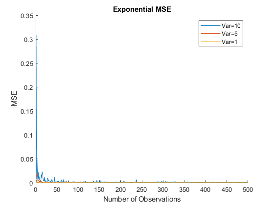
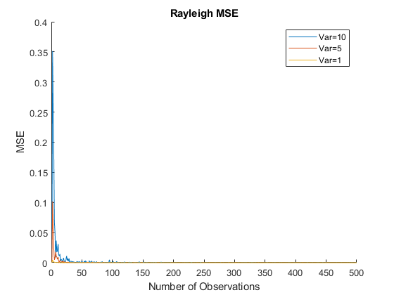
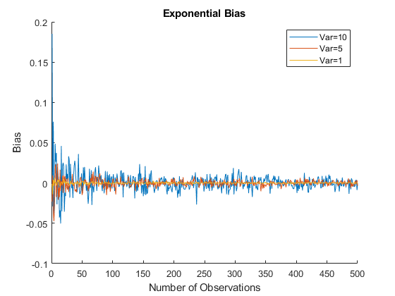
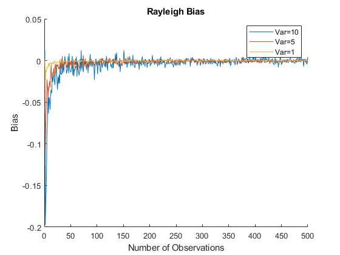
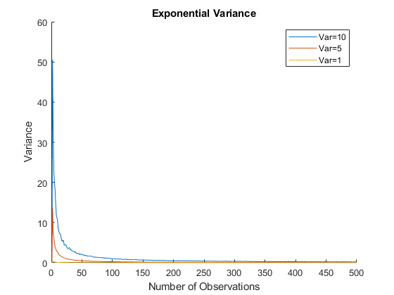

Contents
clc
clear
close all
Constants
load( 'data.mat' );
NUM_TRIALS = 1e3;
NUM_OBSERVATIONS = 500;
lambda = [ 1; 5; 10 ];
Part 1
range = 1:NUM_OBSERVATIONS;
mse_exp = zeros( length(lambda), length(range) );
mse_rayl = zeros( length(lambda), length(range) );
bias_exp = zeros( length(lambda), length(range) );
bias_rayl = zeros( length(lambda), length(range) );
var_exp = zeros( length(lambda), length(range) );
var_rayl = zeros( length(lambda), length(range) );
for numObv = range
i = numObv;
data_exp = exprnd( repmat( lambda, [1,NUM_TRIALS,numObv] ) );
data_rayl = raylrnd( repmat( lambda, [1,NUM_TRIALS,numObv] ) );
lambda_hat_exp = calcLambdaExp( data_exp );
lambda_hat_rayl = calcLambdaRayl( data_rayl );
var_exp(:,i) = var( lambda_hat_exp, 0, 2 );
var_rayl(:,i) = var( lambda_hat_rayl, 0, 2 );
mse_exp(:,i) = calcMSE( lambda_hat_exp, lambda );
mse_rayl(:,i) = calcMSE( lambda_hat_rayl, lambda );
bias_exp(:,i) = calcBias( lambda_hat_exp, lambda );
bias_rayl(:,i) = calcBias( lambda_hat_rayl, lambda );
end
plotData( mse_exp, lambda, "MSE", "Exponential MSE" );
plotData( mse_rayl, lambda, "MSE", "Rayleigh MSE" );
plotData( bias_exp, lambda, "Bias", "Exponential Bias" );
plotData( bias_rayl, lambda, "Bias", "Rayleigh Bias" );
plotData( var_exp, lambda, "Variance", "Exponential Variance" );
plotData( var_rayl, lambda, "Variance", "Rayleigh Variance" );
    

Part 2
pred_exp = calcLambdaExp( data );
pred_rayl = calcLambdaRayl( data );
[ param_exp, ~ ] = mle( data, 'distribution', 'Exponential' );
[ param_rayl, ~ ] = mle( data, 'distribution', 'Rayleigh' );
eps = 1e-5;
assert( abs(pred_exp-param_exp) < eps, "Exponential prediction is incorrect." );
assert( abs(pred_rayl-param_rayl) < eps, "Rayleigh prediction is incorrect." );
prob_exp = mean( calcExp( data, pred_exp ) );
prob_rayl = mean( calcRayl( data, pred_rayl ) );